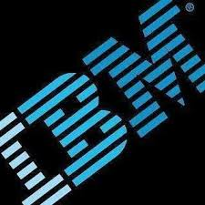

Work Experience
-

WSC Developer at IBM (June 2016- present)
Underwent 2 months Training in the IBM WebSphere Commerce Domain. Currently working for Client PREMIER FARNELL. Roles and responsiblities included dataload activities on all Production environments, resolving post-deployment commerce issues and admin issues by handling tickets raised by the client, working on new releases which includes both frontend and backend issues related to Commerce.
-
Intern at UTC Aerospace Systems, Bangalore (May 2015-July 2015)
Evaluation of the use of Xamarin Software in developing mobile application across multiple platforms such as Android, iOS and Windows using C# and .NET framework features. Analyzed the pros and cons of using this software for mobile development rather than traditional mobile development approach of using different languages and codebase for each platform
Certifications
-
IBM WebSphere Commerce v8.0.4 - Foundations
Certification Date: Apr 2018
-
Enterprise Design Thinking Practitioner(Issued by IBM)
Certification Date: Sep 2016